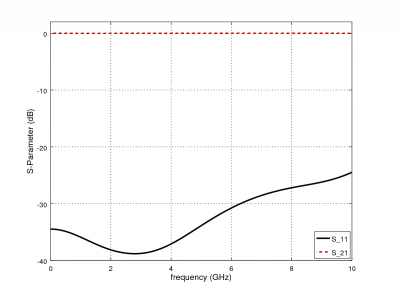

Tutorial: Stripline to MSL Transition
From openEMS
- Download the latest matlab file from github: [1]
- Simulation Time: ~ 2 min
We will cover in this tutorial:
- Setup a stripline port
- Setup a mircostrip line (MSL) port
- Transition via and polygon as cutout ground plane
- apply an inhomogeneous mesh used for improved accuracy and simulation speed
- calculate the S-Parameter of the transition
First Steps
- Install and verify your openEMS installation: Tutorial: First Steps
Matlab Simulation Script
- Start the script within an empty environment:
close all clear clc
- Setup the Simulation
physical_constants; unit = 1e-6; % specify everything in um line_length = 15000; % line length of strip line and microstrip line substrate_width = 6000; air_spacer = 4000; % air spacer above the substrate msl_width = 500; msl_substrate_thickness = 254; strip_width = 500; strip_substrate_thickness = 512; connect_via_rad = 500/2; connect_via_gap = 1250/2; substrate_epr = 3.66; substrate_kappa = 1e-3 * 2*pi*2.45e9 * EPS0*substrate_epr; % substrate losses f_max = 10e9; resolution = 250; edge_res = 25; feed_shift = 2500; meas_shift = 5000;
- Setup FDTD Parameters & Excitation Function
FDTD = InitFDTD(); FDTD = SetGaussExcite( FDTD, f_max/2, f_max/2); BC = {'PML_8' 'PML_8' 'PEC' 'PEC' 'PEC' 'MUR'}; FDTD = SetBoundaryCond( FDTD, BC );
- Setup CSXCAD Geometry & Mesh
CSX = InitCSX(); edge_mesh = [-1/3 2/3]*edge_res; % 1/3 - 2/3 rule for 2D metal edges mesh.x = SmoothMeshLines( [-connect_via_gap 0 connect_via_gap], 2*edge_res, 1.5 ); mesh.x = SmoothMeshLines( [-line_length mesh.x line_length], resolution, 1.5); mesh.y = SmoothMeshLines( [0 msl_width/2+edge_mesh substrate_width/2], resolution/4 , 1.5); mesh.y = sort(unique([-mesh.y mesh.y])); mesh.z = SmoothMeshLines( [linspace(-strip_substrate_thickness,0,5) linspace(0,strip_substrate_thickness,5) \ linspace(strip_substrate_thickness,msl_substrate_thickness+strip_substrate_thickness,5) 2*strip_substrate_thickness+air_spacer] , resolution ); CSX = DefineRectGrid( CSX, unit, mesh ); % Create Substrate CSX = AddMaterial( CSX, 'RO4350B' ); CSX = SetMaterialProperty( CSX, 'RO4350B', 'Epsilon', substrate_epr, 'Kappa', substrate_kappa ); start = [mesh.x(1), mesh.y(1), -strip_substrate_thickness]; stop = [mesh.x(end), mesh.y(end), +strip_substrate_thickness+msl_substrate_thickness]; CSX = AddBox( CSX, 'RO4350B', 0, start, stop ); % Create a PEC called 'metal' and 'gnd' CSX = AddMetal( CSX, 'gnd' ); CSX = AddMetal( CSX, 'metal' ); % Create strip line port (incl. metal stip line) start = [-line_length -strip_width/2 0]; stop = [0 +strip_width/2 0]; [CSX,port{1}] = AddStripLinePort( CSX, 100, 1, 'metal', start, stop, strip_substrate_thickness, 'x', [0 0 -1], 'ExcitePort', true, 'FeedShift', feed_shift, 'MeasPlaneShift', meas_shift ); % Create MSL port on top start = [line_length -strip_width/2 strip_substrate_thickness+msl_substrate_thickness]; stop = [0 +strip_width/2 strip_substrate_thickness]; [CSX,port{2}] = AddMSLPort( CSX, 100, 2, 'metal', start, stop, 'x', [0 0 -1], 'MeasPlaneShift', meas_shift ); % transitional via start = [0, 0, 0]; stop = [0, 0, strip_substrate_thickness+msl_substrate_thickness]; CSX = AddCylinder(CSX, 'metal', 100, start, stop, connect_via_rad); % metal plane between strip line and MSL, including hole for transition p(1,1) = mesh.x(1); p(2,1) = mesh.y(1); p(1,2) = 0; p(2,2) = mesh.y(1); for a = linspace(-pi, pi, 21) p(1,end+1) = connect_via_gap*sin(a); p(2,end) = connect_via_gap*cos(a); endfor p(1,end+1) = 0; p(2,end ) = mesh.y(1); p(1,end+1) = mesh.x(end); p(2,end ) = mesh.y(1); p(1,end+1) = mesh.x(end); p(2,end ) = mesh.y(end); p(1,end+1) = mesh.x(1); p(2,end ) = mesh.y(end); CSX = AddPolygon( CSX, 'gnd', 1, 'z', strip_substrate_thickness, p);
- Write/Show/Run the openEMS compatible xml-file
Sim_Path = 'tmp'; Sim_CSX = 'strip2msl.xml'; [status, message, messageid] = rmdir( Sim_Path, 's' ); % clear previous directory [status, message, messageid] = mkdir( Sim_Path ); % create empty simulation folder WriteOpenEMS( [Sim_Path '/' Sim_CSX], FDTD, CSX ); CSXGeomPlot( [Sim_Path '/' Sim_CSX] ); RunOpenEMS( Sim_Path, Sim_CSX );
- Post-Processing

 Stripline to MSL Transition S-Parameter
Stripline to MSL Transition S-Parameter
close all f = linspace( 0, f_max, 1601 ); port = calcPort( port, Sim_Path, f, 'RefImpedance', 50); s11 = port{1}.uf.ref./ port{1}.uf.inc; s21 = port{2}.uf.ref./ port{1}.uf.inc; plot(f/1e9,20*log10(abs(s11)),'k-','LineWidth',2); hold on; grid on; plot(f/1e9,20*log10(abs(s21)),'r--','LineWidth',2); legend('S_{11}','S_{21}'); ylabel('S-Parameter (dB)','FontSize',12); xlabel('frequency (GHz) \rightarrow','FontSize',12); ylim([-40 2]);

{kind=link}